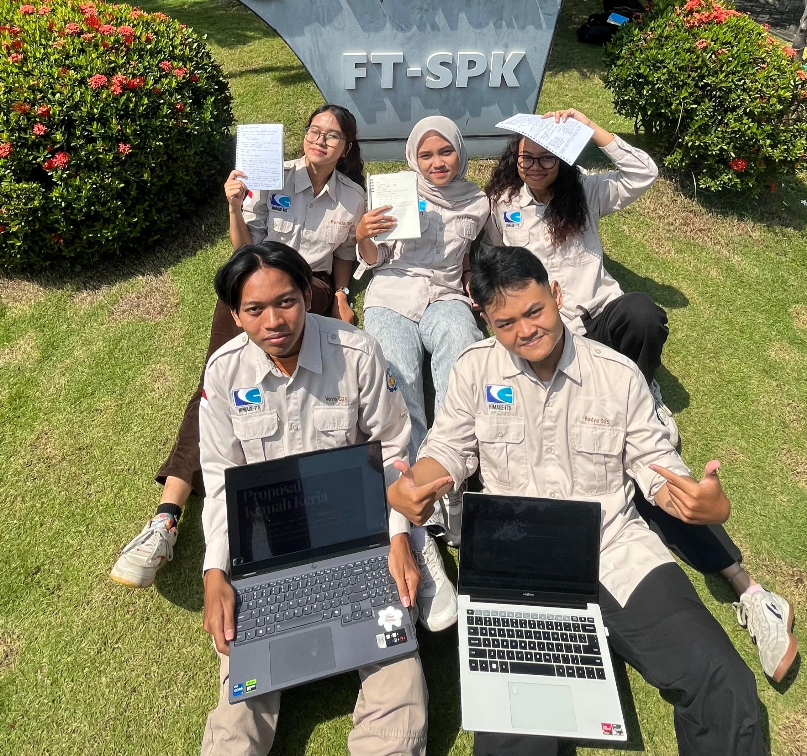

Fenomena tersembunyi yang berdampak besar terhadap infrastruktur perkotaan
Penurunan muka tanah terjadi secara gradual dan berdampak pada infrastruktur.
Kawasan pesisir dengan elevasi rendah menyebabkan akumulasi air yang tinggi.
Infiltrasi air meningkatkan tekanan tanah dan mempercepat subsiden.
Beban kendaraan mempercepat deformasi tanah.
Belum tersedia sistem pemetaan prioritas yang mengintegrasikan data subsiden, curah hujan, dan transportasi secara komprehensif.

5016231017

5016231055
5016231076
5016231103
5016231126

Kami merupakan tim dari Geodesi dan Geomatika ITS yang berfokus pada pemetaan land subsidence menggunakan teknologi InSAR. Proyek ini bertujuan untuk mendukung mitigasi bencana, khususnya banjir di wilayah pesisir seperti Kelurahan Tanjung Perak, Surabaya.